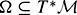

|
| |||||||||||||
|
|
||
First we must decide how generally to define the state spaces of the robotic systems we will consider. For example, we could treat a very general case, allowing the state space of the system to be any smooth manifold. This would allow us to study, e.g., the motion of a spherical pendulum. The configuration space of this system is the sphere S2. Or we could limit our treatment to systems evolving on Lie groups, particularly matrix Lie groups. This would allow us to model the orientation of a satellite as a point in SO(3).
In this chapter, we restrict our attention even further to systems evolving on vector spaces . This allows us to get to the main results as quickly as possible. Also, any n-dimensional manifold is locally "similar" (diffeomorphic) to , so, equipped with a proper set of local coordinates, any n-dimensional manifold can be treated locally as . By making this simplification, we require the use of a local coordinate system in our computations, and we may lose information about the global structure of the space. As examples, the true configuration space of a 2R robot arm is the torus T2 = S1 × S1, which is doughnut-shaped while  is not; and a global representation of the orientation of a satellite is SO(3), which is different from a local representation using three Euler angles (). See figure 12.1 for another example.
is not; and a global representation of the orientation of a satellite is SO(3), which is different from a local representation using three Euler angles (). See figure 12.1 for another example.
Although we focus on vector state spaces, most of the ideas in this chapter generalize immediately to general manifolds.
In this chapter, denotes the configuration of the system and denotes the state of the system. If the system is kinematic, then the state is simply the configuration , and the controls are velocities. If the system is a second-order mechanical system, then x includes both configurations q and velocities , and the controls are forces (accelerations). The dimension of the configuration space is , and the dimension of the state space is n.
We will carry two examples throughout the chapter: a unicycle, a kinematic system; and a model of a planar spacecraft, a second-order mechanical system. We will treat all systems uniformly, as systems with state x on a state space . Only in section 12.4 and subsection 12.5.7 will we specialize our study to second-order mechanical systems such as the spacecraft model.
The unicycle is a wheel that rolls upright on a horizontal plane (figure 12.2). The configuration of the wheel is q = [q1, q2, q3]T, describing the contact point of the wheel on the plane (q1, q2) and the steering angle q3 of the wheel. (We could also include the rolling angle of the wheel, i.e., the location of the air nozzle on the tire, in the description of the configuration, but we will ignore this for now.) The system is kinematic, so x = [x1, x2, x3]T = q, , and . (Since we are dealing with local coordinates, we are ignoring the fact that the global structure of the space is . This will not affect the equations of motion, but requires the use of mod2π arithmetic on the third coordinate.) The controls are the rolling speed of the wheel and the rate of change of the steering angle. Sideways translation of the wheel is prevented by the no-slip constraint imposed by the wheel. This example is sometimes known as the rolling penny, or the pizza cutter, and it is similar to a model for a car.
The body moves in a frictionless, inviscid plane by means of two thrusters fixed to the body (figure 12.3). The mass and inertia of the body (about the center of mass) are unit. The line of action of the thrust u1 is through the center of mass, and the line of action of the thrust u2 is perpendicular and a distance d from the center of mass. The configuration is q = [q1, q2, q3]T, describing the location of the center of mass (q1, q2) and the angle q3 of the line of action of the first thruster relative to the world q1-axis. The system is second-order, so , , and . Gravitational acceleration ag acts in the −q2-direction, and ag may be zero.
The rest of section 12.1 introduces concepts from differential geometry that will be useful in understanding underactuated systems. For the unicycle, e.g., we will see that its instantaneous motions can be described in terms of two "vector fields" associated with the controls to drive and steer the unicycle. Linear combinations of these two vector fields define a "distribution" describing all possible instantaneous motions of the unicycle. The "integral manifold" describes all the states the system can reach by following vector fields in the distribution. We use the "Lie bracket" to show that two vector fields in the distribution can generate a parallel-parking motion for the unicycle, effectively giving it a sideways motion, meaning that the integral manifold is the entire configuration space—the velocity constraint does not reduce the reachable space.
Section 12.2 describes how a robot system can be expressed as a system of vector fields and controls, and section 12.3 uses the concepts developed in this section to study the set of states reachable by the controls.
Let be a smooth curve on parameterized by s. Then dx/ds, evaluated at x0 = x(s0), is tangent to the curve at x0. Call this vector V. The vector V is a tangent vector that is tangent to at x0. The tangent vector V lives in , the tangent space of at x0. This space is an n-dimensional vector space consisting of the tangents of all possible curves passing through x0 (figure 12.4). The tangent spaces at different points of are different spaces.
The tangent bundle of , written , is the 2n-dimensional manifold that is the union of tangent spaces at all points in ,
For the systems we study, [1]
A smooth vector field is a smooth map from points to tangent vectors . It is possible to define Ck vector fields, but we will assume that all vector fields are infinitely differentiable. (For example, the vector field g(x) = [x21, sin x3, x1x2]T is infinitely differentiable, but [|x1|, x2, x3]T is only C0.) A picture of the vector field on is shown in figure 12.5. Tangent vectors are written as column vectors.
In the case of a kinematic system,  is the configuration space , and is the set of all possible velocities of the system at x0 = q0. In the case of a second-order system, is the state space , and is the set of all possible velocities and accelerations of the system at . In this case, however, the state x0 already specifies the velocity portion of the tangent vector . This implies drift in second-order systems, as shown in the PBWT example below.
is the configuration space , and is the set of all possible velocities of the system at x0 = q0. In the case of a second-order system, is the state space , and is the set of all possible velocities and accelerations of the system at . In this case, however, the state x0 already specifies the velocity portion of the tangent vector . This implies drift in second-order systems, as shown in the PBWT example below.
A tangent vector for the unicycle is given by . The unicycle is capable of rolling forward and backward and spinning in place. These two vector fields can be written guni1(x) = [cos x3, sin x3, 0]T, rolling forward at unit speed, and guni2(x) = [0, 0, 1]T, spinning counterclockwise at unit speed. The vector fields can also be written as guni1(x) = (cos x3)∂/∂x1 + (sin x3)∂/∂x2 and guni2(x) = ∂/∂x3, where ∂/∂x1, ∂/∂x2, and ∂/∂x3 are the canonical unit basis vectors of the tangent space, i.e., unit speed tangent vectors along the coordinates (see figure 12.6).
 "Click To expand")
A tangent vector for the PBWT is given by . For this system, we can define three vector fields: the drift vector field gpbwt0(x) corresponding to the motion of the body when no thrusters are activated, and the control vector fields gpbwt1(x) and gpbwt2(x) corresponding to the acceleration when thrusters 1 and 2 are fired with unit thrust, respectively. Verify that gpbwt0(x) = [x4, x5, x6, 0, ag, 0]T, gpbwt1(x) = [0, 0, 0, cos x3, sin x3, 0]T, and gpbwt2 (x) = [0, 0, 0, − sin x3, cos x3, −d], and write these vector fields in the canonical basis {∂/∂x1, ∂/∂x2, ∂/∂x3, ∂/∂x4, ∂/∂x5, ∂/∂x6}. Notice if thruster 1 is fired with thrust u1, the system follows the vector field gpbwt0(x) + u1gpbwt1(x).
Let φg denote the flow of the vector field g, where φgt(x) gives the system state after following the flow φg from x for a time t. The flow satisfies the equation
The vector field is complete if its flow is defined for all x and t.
The curve is the integral curve of g containing x. The integral curve describes the set of reachable points of from x by following the vector field forward and backward in time (figure 12.7). This notion can be generalized to the integral manifold of a set of vector fields , a topic for subsection 12.1.3.
Let  be a set of vector fields, and let be the linear span of vector fields in , given by all linear combinations of vector fields in . At each point
be a set of vector fields, and let be the linear span of vector fields in , given by all linear combinations of vector fields in . At each point  , these vector fields span a linear subspace of . The set of vector fields is said to generate a distribution , which is a smooth assignment of a linear subspace of for each . A distribution is regular if the dimension of the linear subspace is the same at all x.If the dimension is m, then we say that it is an m-dimensional distribution.
, these vector fields span a linear subspace of . The set of vector fields is said to generate a distribution , which is a smooth assignment of a linear subspace of for each . A distribution is regular if the dimension of the linear subspace is the same at all x.If the dimension is m, then we say that it is an m-dimensional distribution.
Consider the two-dimensional regular distribution for the unicycle . We might think of this as the "positive" form of the distribution—feasible motions are generated by linear combinations of the vector fields. A "negative" form of the distribution would start with all motions being feasible, then eliminate those that violate motion constraints. For instance, the unicycle distribution could be written
where is the linear subspace of defined by the distribution . A row vector ω(x) is called a covector and lives in the cotangent space , the dual of  consisting of all linear functionals of elements of . In other words, a covector field ω pairs with a vector field g to yield a real value, . This is sometimes called the "natural pairing" of a tangent vector and covector. The canonical basis of covector fields is {dx1, …, dxn},so that the constraint ω(x) in equation (12.1) can be written as − sin x3dx1 + cos x3dx2.
consisting of all linear functionals of elements of . In other words, a covector field ω pairs with a vector field g to yield a real value, . This is sometimes called the "natural pairing" of a tangent vector and covector. The canonical basis of covector fields is {dx1, …, dxn},so that the constraint ω(x) in equation (12.1) can be written as − sin x3dx1 + cos x3dx2.
A covector field ω is sometimes known as a one-form, because it takes a single element of and produces a real number, linear in the tangent vector. A two-form, as we will see in section 12.4, takes two elements of and produces a real number, linear in each of the arguments.
The cotangent bundle is the union of cotangent spaces for all . A set of covector fields {ω1(x),…, ωk(x)} is said to define a codistribution . If the covector fields ωi (x), i = 1 … k, correspond to motion constraints then Ω is called a constraint codistribution, and it is said to annihilate the distribution of feasible motions, and vice versa. Of special interest are velocity constraints of the form
| (12.2) |
|
that cannot be integrated to yield equivalent configuration constraints. Such constraints are called nonholonomic. Nonholonomic constraints of the form
are sometimes called Pfaffian constraints, as discussed in chapter 10. Pfaffian constraints arise from rolling without slip [e.g., see equation (12.1)] and conservation of angular momentum. In mechanical systems, the covector field a(q) can be interpreted as a generalized force, so has units of power, and the constraint is passive—it does no work on the system.
In second-order underactuated systems, the underactuation implies the existence of acceleration constraints of the form
Constraints of this form that cannot be integrated to equivalent velocity constraints are sometimes referred to as "second-order nonholonomic" constraints, but this terminology is not standard.
In general, it is not easy to determine if an acceleration constraint can be integrated to yield an equivalent velocity constraint, or if a velocity constraint can be integrated to yield an equivalent configuration constraint. In the rest of this chapter, we use the "positive" form of the distribution and study the reachable set by vector fields in .
Let be a set of vector fields and be the distribution defined by . We would like to know the reachable set of by following vector fields in . While this is generally difficult globally, it is possible to learn something about the reachable set locally by looking at the Lie brackets of vector fields in . Given two vector fields belonging to , the Lie bracket tells us if infinitesimal motions along these vector fields can be used to locally generate motion in a direction not contained in . Perhaps the best-known example is the parallel-parking maneuver for a car or, in our case, a unicycle. Direct sideways motion is prohibited by the no-slip constraint, but sideways motion can be approximated by a series of forward-backward and turning maneuvers. The implication of this is that the locally reachable set of is not two- dimensional, as the two-dimensional distribution might seem to indicate, but fully three-dimensional. The no-slip velocity constraint does not imply a constraint on reachable configurations.
For two vector fields , consider the state reached from x0 = x(0) by first following g1 for a small time ε < 1, then following g2 for time ε, then following −g1 for time ε, then following −g2 for time ε. This is expressed mathematically as
We can take a Taylor series in ε to solve the differential equation (12.3) approximately (see, e.g., [330] and problem 29), yielding
| (12.4) |
|
where the partial derivatives are evaluated at x0 and O(ε3) indicates terms of order ε3, which are dominated by the term of order ε2 when ε is small. Note there are no O(ε) terms. The ε2 term represents the approximate net motion of the system, and the term inside the parentheses is the Lie bracket of g1 and g2.
The Lie bracket of g1 and g2 is written [g1, g2] and is given in local coordinates by
The Lie bracket [g1, g2] defines a new vector field, and if it is not contained in , then it represents a new motion direction that can be followed approximately. Locally generating motion in this direction is "slower" than following the vector field g1 or g2 directly, as the net motion is only O(ε2) for time O(ε), where ε < 1. Again, parallel parking is a well-known example, as approximately generating sideways motion by forward-backward and turning motions is tedious and time-consuming. If [g1, g2] = 0, then no new motion is created, and the two vector fields are said to commute.
Since [g1, g2] is a vector field, we can calculate its Lie bracket with another vector field. A Lie product of degree k is a bracket term where the original vector fields appear k times. For instance, [[[g1, g2], g1], g2]isa Lie product of degree 4.
The rolling and turning vector fields for the unicycle are guni1 = [cos x3, sin x3, 0]T and guni2 = [0, 0, 1]T, respectively. So
Note that the Lie bracket motion is to the side, in the direction prevented by the no-slip constraint (see figure 12.8).
The Lie algebra of a set of vector fields , written , is the linear span of all Lie products, of all degrees, of vector fields in . To determine the Lie algebra, define , and the series
Then is given by the distribution . Forexample, the series for begins

The corresponding series , … is called the filtration of the distribution . The filtration is regular if each distribution in the filtration is regular. If the filtration is regular, then the dimension of the distribution grows at each step of the construction, or else the construction terminates. (Of course, for all i.) If the filtration is regular, we are guaranteed a finite value of k such that . This distribution is the involutive closure of , and a distribution is involutive if .
If the filtration is not regular, then in general there is no way to know a priori a degree k at which . If there is a degree k at which all Lie products become zero, then the Lie algebra is called nilpotent of order k.
The integral manifold of containing x0 is the set of that can be reached from x0 by vector fields in , and is the tangent space of the integral manifold at x.By the well known Frobenius theorem,an m-dimensional regular distribution can be integrated to yield an m-dimensional integral manifold if and only if is involutive.
If a distribution does not have the entire space as an integral manifold, then is said to generate a foliation of  , and each distinct integral manifold is called a leaf of the foliation. Consider, e.g., the one-dimensional distribution generated by guni2 = [0, 0, 1]T (turning motion) for the unicycle (see figure 12.6). The distribution is one-dimensional, regular, and involutive, and the integral manifolds are lines in x3 (wrapping around at 2π) with fixed position (x1, x2). The unicycle is confined to the same leaf of the foliation for all time if it can only follow this vector field. A more interesting example of a foliation is given in example 12.1.7 below.
, and each distinct integral manifold is called a leaf of the foliation. Consider, e.g., the one-dimensional distribution generated by guni2 = [0, 0, 1]T (turning motion) for the unicycle (see figure 12.6). The distribution is one-dimensional, regular, and involutive, and the integral manifolds are lines in x3 (wrapping around at 2π) with fixed position (x1, x2). The unicycle is confined to the same leaf of the foliation for all time if it can only follow this vector field. A more interesting example of a foliation is given in example 12.1.7 below.
The existence of integral manifolds smaller than the whole state space indicates that the motion constraints actually limit the reachable state space. For example, velocity constraints on a kinematic system might be integrated to yield configuration constraints, indicating that the original constraints are actually holonomic. Similarly, acceleration constraints on a mechanical system might be integrated to yield velocity or even configuration constraints.
Lie brackets satisfy the following properties:
Skew-symmetry:
Jacobi identity:
Taking these properties into account, the Philip Hall basis gives a way to choose the smallest number of Lie products that must be considered at each degree k to generate a basis for the distribution . See the book by Serre [380] for details.
From before, we have guni1 = [cos x3, sin x3,0]T, guni2 = [0, 0, 1]T, and guni3 = [guni1, guni2] = [sin x3, −cos x3, 0]T. The dimension of the distribution defined by {guni1, guni2, guni3} is three at all , implying that the distribution is regular. It is also certainly involutive, since the dimension of is three. To see that the three vector fields are indeed linearly independent, we define the 3 × 3 matrix [guni1 guni2 guni3] obtained by placing the column vectors side by side. The rank of the matrix is 3 at all , which can be verified by the determinant
Since the distribution is regular and involutive, it has a three-dimensional integral manifold, which is the entire space . The distribution is the involutive closure of . The filtration is regular.
Define the vector fields g1(x) = [x1 cos x3, x2 sin x3, 0] and g2 = [0, 0, 1]T on . The vector field g2 by itself defines a regular one-dimensional involutive distribution. The vector field g1 does not, however, as it vanishes at x1 = x2 = 0. The Lie bracket of these vector fields is [g1, g2] = [x1 sin x3, −cos x3, 0]T, and
This means that the distribution span({g1, g2, [g1, g2]}) is rank 3 at points where both x1 and x2 are nonzero. It is not regular, as the rank is less at points where either x1 or x2 is zero. In fact, it is not hard to see that the integral manifold of this distribution is one-dimensional from points [0, 0, x3]T, two-dimensional from points [x1 ≠ 0, 0, x3]T and [0, x2 ≠ 0, x3]T, and three-dimensional from all other points. The foliation is pictured in figure 12.9.
As derived previously, we have gpbwt0 = [x4, x5, x6, 0, ag, 0]T, gpbwt1 = [0, 0, 0, cos x3, sin x3, 0]T, and gpbwt2 = [0, 0, 0, −sin x3, cos x3, −d]T. Lie bracket computations show that
The dimension of the distribution defined by these vector fields is six at all (provided d ≠ 0), so the distribution is both regular and involutive. The integral manifold is the entire space . The distribution is the involutive closure of .
We now apply the ideas of this section to study controllability of underactuated systems, taking into account the fact that controls determine how the system vector fields are followed. It may not be possible to follow arbitrary linear combinations of system vector fields. For example, the drift vector field gpbwt0 of the PBWT is fundamentally different from the control vector fields gpbwt1 and gpbwt2.
[1]We note that if is a more general manifold, and it is parallelizable (e.g., a Lie group), then . The reader should be careful not to generalize improperly, however. For example, , for reasons beyond the scope of this chapter. For an intuitive discussion of this issue, see [372].
|
|
||
|